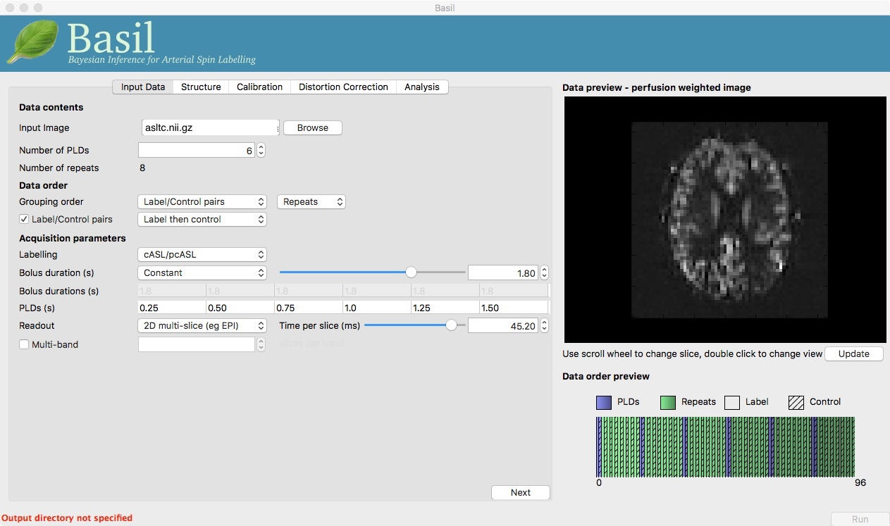

In this practical you will learn how to use the BASIL tools in FSL to analyse ASL data, specifically to obtain quantiative images of perfusion (in units of ml/100 g/min), as well as other haemodynamic parameters. For the puproses of the practical you will be instructed to use the BASIL GUI, all of the same analyses (and more) can be achieve dusing command line tools, as you will see in the accompanying lecture. This practical is a shorter version of the examples that accompany the Primer: Introduction to Neuroimaging using Arterial Spin Labelling. On the website for the primer you can find more emxaples than we have time for on the FSL course, including instructions for using both the GUI and command line tools.
http://www.neuroimagingprimers.org/examples/introduction-primer-example-boxes/
NOTE that if you are follwing this practial outside of the FSL course you should ensure you are using the pre-release of BASIL alongside a recent version of FSL v5. This can be found by following a link from the FSL website: https://fsl.fmrib.ox.ac.uk/fsl/fslwiki/BASIL
The aim of this exercise is to perform perfusion quantification with one of the most widely recommened variants of ASL. Single PLD pcASL is now regarded as sufficiently simple and reliable, boht for acquisition and analysis, that it is the first option most people should consider when using ASL for the first time in a study. Although more can be done with other ASL variants, particularly when acquisition time allows.
Take a look inside the data directory:
cd ~/fsl_course_data/ASL ls
This dataset used pcASL labeling and we are going to start with data collected using a single post-label delay. This dataset follows as closely as posisble the recommendations of the ASL Consensus Paper on a good general purpose ASL acquisition, although we have chosen to use a 2D mutli-slice readout rather than a full-volume 3D readout.
The files you will need to begin with are:
spld_asltc.nii.gz - the label-control ASL series containing 60
volumes. That is 30 label and 30 control, in pairs of alternating images with
label first.aslcalib.nii.gz - the calibration image, a (largely) proton-density
weighted image with the same readout (resolution etc) as the main
ASL data. The TR for this data is 4.8 seconds, which means there
will be some T1 weighting.aslcalib_PA.nii.gz - another calibration image,
identical to aslcalib.nii.gz apart from the use of
posterior-anterior phase encoding (anterior-posterior was used in
the rest of the ASL data). This is provided for distortion
correction.T1.nii.gz - the T1-weigthed anatomical of the same
subject.
It is always a good idea to take a look at the raw data just to check that nothing has gone horribly wrong in the acquisition and ensure you know exactly what you are dealing with.
View these images in fsleyes:
fsleyes aslcalib.nii.gz -dr 0 1500 asltc.nii.gz -dr 0 1500
Notice that:
asltc.nii.gz image as 0 to
500 now.
Since the data looks okay we can proceed to the calculation of a perfusion-weighted image (PWI). For this we will use the 'preview' feature of the BASIL GUI, essentially we are generating the PWI to check that the data is okay for further analysis.
To launch the GUI at the command line you will need to type
asl_gui. Note that if you have downloaded the
'pre-release' yourself, you may need to provide a path to the
installed version of the GUI, e.g. /Users/{blah}/Downloads/oxford_asl/asl.gui
Once it has launched you will find yourself on the 'Input Data' tab, you should:
asltc.nii.gz as the 'Input
Image'.At this point the GUI should look like the screen shot below and a PWI will have appeared in the 'Data Preview' pane. This this is reassuring, if we didn't see something that looks roughly like this, we might check if the data order that the GUI is expecting matches that in the data. We could alter the 'Data order' settings if needed and update the preview again'.
Note also, beneath the 'Data Preview', that there is a 'Data order preview'. The idea of this graphic is to help visually to confirm that the way that the GUI is intepreting the ordering of volumes in the data matches what you are expecting. In this case we have a single PLD repeated 30 times with the label and control images paired in the data (this is pretty common). What the 'Data order preview' shows is the first instance of the PLD in purple, showing both the label and control (hatched) volume. Each subsequent repeat of the same PLD is coloured green, again showing that we have a label follwed by control (hatched) volume.
You can try a different 'Data order' option to see what happens. Change 'Label/Control pairs' from 'Label then control' to 'Control then label'. This switches the expected order of label and control images within the pair. If you then udpate the preview you will find that the contrast reverses, the perfusion now has the wrong 'sign'.
We have checked the PWI, thus we can proceed to final quantification of perfusion, inverting the kinetics of the ASL label delivery and using the calibration image to get values in the units of ml/100g/min.
To do this we need to tell the BASIL GUI some information about the data and the analysis we want to perform.
You can now hit 'Next' and you will be taken to the next tab. For this (simple) analysis we do not want to use a structural image, so we can move on by clicking 'Next' again. Or we could skip stright to the 'Calibration' tab using the menu across the top.
On the 'Calibration' tab, 'Enable Calibration' first, then load
the calibration image aslcalib.nii.gz. Change the
'Calibration mode' to 'voxelwise', and set the 'Sequence TR (s)' to
be 4.8.
Finally, we need to set the analysis options: either skip to the 'Analysis' tab or click 'Next' twice.
On the 'Analysis' tab, choose an output directory name, e.g.,
oxasl. And, select 'Analysis which conforms to White
Paper', so that we know the analysis is using the same default
parameter values proposed in the ' ASL White Paper' quantification
formula. Note that in the lower left corner the GUI is now telling
us that we are 'Ready to Go'. At this point you can click 'Run' in
the lower right corner.
To view the final result:
fsleyes oxasl/native_space/perfusion_calib.nii.gz
Note that if you just supply a name for the output directory (not a full path), as we have here, this will be placed in the 'working directory', i.e. whicheveer directory you were in when you launched the GUI.
You will find something that looks very similar to the PWI we viewed before, but now the values at every voxel are in ml/100g/min.
You will also find a PWI saved as
oxasl/native_space/perfusion. This is very similar to the
PWI displayed in the preview pane, except that the kinetic
model inversion has been applied to it, this is the image
pre-calibration.
The purpose of this practical is essentially to do a better job of the analysis we did above, exploring more of the features of the GUI including things like motion and distortion correction.
Go back to the GUI which should still be setup from the last analysis you did (if you have closed it follow the steps above to repeat the setup - but do not click run).
On the 'Distortion Correction' tab, select 'Apply distortion
correction'. Load the 'Phase-encode-reveresed calibration image'
aslcalib_PA.nii.gz. Set the 'Effective EPI echo
spacing' to 0.06 and the 'Phase encoding direction' to 'y'.
On the 'Analysis' tab, select 'Motion Correction'. Make sure you have 'Adaptive spatial regularisation on perfusion' selected (it is by default). This will reduce the appearance of noise in the final perfusion image using the minimum ammount of smoothing appropriate for the data. Now click 'Run'.
For this analysis we are still in 'White Paper' mode.Specifically this means we are using simplest kinetic model that assumes all delivered blood-water has the same T1 as that of blood (see Chapter 4 of the ASL primer for more information) and that the Arterial Transit Time should be treated as 0 seconds.
To view the final result:
fsleyes oxasl/native_space/perfusion_calib.nii.gz
The result will be similar to the analysis in Example 1 although the effect of distortion correction should be noticeable in the anterior protion of the brain. The effects of motion correction are less obvious, this data does not have a lot of motion corruption in it.
Thus far all of the analyses have relied purely on the ASL data alone. However, often you will have a (higher resolution) structural image in the same subject and would like to use this as well, at the very least as part of the proceess to transform the perfusion images into some template space.
We can repeat the analysis above but now providing structural
information. The recommended way to do
this is to take your T1 weighted structural image (which is most
common) and firstly process using fsl_anat, passing the
output directly from that tool BASIL.
For this practical fsl_anat has already been run for
you and you will find the output in the data directory as ~/fsl_course_data/singlePLDpcASL/T1.anat
Go back to the analysis you have setup above. On the 'Structure'
tab, for 'Structural data from' select 'Existing FSL_ANAT
output'. Then for the 'Existing FSL_ANAT output' choose T1.anat.
This analysis will take longer overall, although the extra time is taken up doing registration between ASL and structural images.
You will now find some new results in the output directory:
oxasl/struct_space - this sub-drectory contains results
transformed into the same space as the structural image. The
files in here will match those in the native_space
subdirectry of the earlier analysis, i.e., containing perfusion
images with and without calibration.oxasl/native_space/asl2struct.mat - this is the
(linear) transformation between ASL and structural space. It can be
used along with a transformation between sturcutral and template
space to transform the ASL data into the template space. It was used
to create the results in oxasl/struct_space.oxasl/native_space/perfusion_calib_gm_mean.txt -
this contains the result of calculating the perfusion within a gray
matter mask, these are in ml/100g/min. The mask was derived from the partial volume estimates
created by fsl_anat and transformed into ASL space
followed by thresholding at 70%. This is a helpful check on the
absolute perfusion values found and it is not aytpical too see
values in the range 30-50 here. There is also a white matter result
(for which a threshold of 90% was used).oxasl/native_space/gm_mask.nii.gz - this is the gray
matter mask used in the above calculations. There is also the
associated white matter mask.oxasl/native_space/gm_roi.nii.gz - this is another
mask that represents areas in which there is some grey matter (at
least 10% from the partial volume estimates). This can be useful for
visualisation, but mainly when looking at partial volume corrected
data.Thus far the calibration to get perfsion in units of ml/100g/min has been done using a voxelwise division of the realtive perfusion image by the (suitably corrected) calibration image - so called 'voxelwise' calibration. This is in keeping with the recommendations of the ASL White Paper for a simple to implement quantitative analysis. However, we could also choose to use a reference tissue to derive a single value for the equilirbirum mangetization of arterial blood and use that in the calibnration process.
Go back to the analysis you have already set up. We are now going to turn off 'White Paper' mode, this will provide us with more options to get a potentially more accurate analysis. To do this return to the 'Analysis' tab and deselect the 'White Paper' option, you will see that the 'Arterial Transit Time' goes from 0 seconds to 1.3 seconds (the default value for pcASL in BASIL based on our experience with pcASL labeling plane placement) and the 'T1' value (for tissue) is different to 'T1b' (for arterial blood), since the Standard (aka Buxton) model for ASL kinetics considers labeled blood both in the vascualture and the tissue.
Now that we are not in 'White Paper' mode we can also change the calibration method. On the 'Calibration' tab, change the 'Calibration mode' to 'Reference Region'. Now all of the 'Reference tissue' options will become available, but leave these as they are: we will accept the default option of using the CSF (in the ventricles) for calibration.
csfmask.nii.gz from the data directory. This is a ready
prepared ventricular mask for this subject. (in fact it is precisely
the mask you would get if you ran the analysis as setup above).The resulting perfusion images should look very similar to those
produced using the voxelwise calibration, and the absolute values
should be similar too. For this, and many datasets, the two methods
are broadly equivalent. You can check on some of the interim
calcuations for the calibration by looking in the
oxasl/calib subdirectory: here you will find the value
of the estimated equilirbirum mangetization of arterial blood for
this dataset in M0.txt and the reference tissue mask in
refmask.nii.gz. It is worth checking that the latter
does indeed only lie in the venticles when overlaid on an ASL image
(e.g. the perfusion image or the calibration image), it should be
conservative, i.e., only select voxels well within the ventricles
and not on the boundary with white matter.
Having dealt with structural image and in the process obtained partial volume estimates we are now in a position to do partial volume correction. This does more than simply attempt to estimate the mean perfusion within the grey matter by the definition of an ROI based on the partial voume estimates, but attempts to derive and image of gray matter perfusion directly (along with a separate image for white matter).
This is very simple to do via the GUI. Return to your earlier analysis and now on the 'Analysis' tab select 'Partial Volume Correction'. That is it! You might not want to click 'Run' at this point becuase partial volume correction takes substantially longer to run.
If you do run this analysis (later), in the results directory you will still find an analysis performed
without partial volume correction in oxasl/native_space
as before. The results of partial volume correction can be found in
oxasl/native_space/pvcorr. This new subdirectory has the
same structure as the non-corrected results, only now
perfusion_calib.nii.gz is an estimate of perfusion only
in gray matter, it has been joined by a new set of images for the
estimation of white matter perfusion, e.g.,
perfusion_wm_calib.nii.gz. It may be more helpful to look at
perfusion_calib_masked.nii.gz (and the equivalent
perfusion_wm_calib_masked.nii.gz) since this has been
masked to include only voxels with more than 10% gray matter (or white
matter), i.e., voxels in which it is reasonable to interpret the gray
matter (white matter) perfusion values.
The purpsoe of this exercise is to look at some multi-PLD pcASL. As with the single PLD data we can obtain perfusion images, but now we can account for any differences in the arrival of labeled blood-water (the arterial transit time, ATT) in different parts of the brain. As we will also see we can extract other interesting paramerts, such as the ATT in its own right, as well as arterial blood volumes.
The data we wil use in this section supplements the single PLD pcASL data above, adding multi-PLD ASL in the same subject (collected in the same session). This dataset used the same pcASL labelling, but with a label duration of 1.4 seconds and 6 post-labelling delays of 0.25, 0.5, 0.75, 1.0, 1.25 and 1.5 seconds.
Load the GUI ( Note the 'Data order preview'. For mutli-PLD ASL it is important
to get the data order specification right. In this case the default
options in the GUI are correct: the PLDs come as label-control
pairs, i.e. alternating label then control images; a full set of the
6 PLDs has been acquired first, then this has been repeated 8
subseqeunt times, this is indcated in the preview by colouring the
first instance of a PLD as purple and subsequent as green, with
different PLDs appearing as different shase of purple (or
green). Getting a plausible looking PWI is a good sign that the data
order is correct, but it is not a guarantee that the PLD ordering is
correct, so always check carefully. Move to the 'Calibration' tab, select 'Enable Calibration' and as
the 'Calibration Image' load the Move to the 'Distortion Correction' tab. Select 'Apply disotrion
correction'. Load the 'Phase-encode-reveresed calibration image'
Finally, move to the 'Analysis' tab. Choose an output directory,
leave all of the other options alone. Click 'Run'. The results directory from this analysis should look similar to
that obtained for the single PLD pcASL. That is reassuring as it is the same subject. The main difference is the
In the analysis above we didn't attempt to model the presence of
arterial (macrovascular) signal. This is fairly
reasonable for pcASL in general, since we can only start sampling
some time after the first arrival of labeled blood-water in the
imaging region. However, given we are using shorter PLD in our
multi-PLD sampling to improve the SNR there is a much greater
likelihood of arterial signal being present. Thus, we might like to
repeat the analysis with this component included Return to your analysis from before. On the 'Analysis' tab select
'Include macro vascular component'. Click 'Run'.The files you will also now need are:
mpld_asltc.nii.gz - the label-control ASL series
containing 96 volumes: each PLD was repeated 8 times, thus there are
16 volumes (label and control paired) for each PLD. The order in
which these was collected was a full set of PLD, followed
by another, etc.Perfusion Quantification
Asl or Asl_gui). On the
'Input Data' tab, for the 'Input Image' load
mpld_asltc.nii.gz. Unlike the single-PLD data, we need to specify the correct number
of PLD, which is 6. At this point the 'Number of repeats' should
correctly read 8. Click 'Update' below the 'Data preview pane'. A
perfusion-weighted image should appear - this is an average over all
the PLDs (and will thus look different to Example 1).Once we are happy with the PWI and data order, we can set the
'Acquisition parameters':

aslcalib.nii.gz image
from the Single-PLD data (it is from the same subject in the same
session so we can use it here too). We have skipped the 'Structure'
tab (to make the analysis quicker), this means if we want 'Calibration
mode' to be 'Reference Region' we need to supply a mask of the
region of tissue to use. Select 'Mask' and load
csfmask.nii.gz. Set the 'Sequence TR' to be 4.8, but
leave all of the other options alone.aslcalib_PA.nii.gz from the Single-PLD pcASL data. Set the 'Effective EPI echo
spacing' to 0.06 and the 'Phase encoding direction' to 'y'.arrival.nii.gz image. If you examine this image you should find a pattern of values
that tells you the time it takes for blood to transit between the
labeling and imaging regions. You might notice that the
arrival.nii.gz image was present even in the single-PLD
results, but if you looked at it contained a single value - the one
set in the Analysis tab - which meant that it
appeared blank in that case.Arterial/Macrovascular Signal Correction
aCBV.nii.gz and
aCBV_calib.nii.gz; following the convention for the
perfusion images, these are the relative and absolute arterial
(cerebral) blood volumes respectively. If you examine one of these
and focus on the more inferior slices you should see a pattern of
higher values that map out the structure of the major arterial
vasculature, including the Circle of Willis. This finding of an
arterial contribution in some voxels results in a correction to the
perfusion image - you may now be able to spot that in the same
slices where there was some evidence for arterial contamination of
the perfusion image before that has now been removed.
In the same way that we could do partial volume correction for single PLD pcASL, we can do this for multi-PLD. If anything partial volume correction should be even better for multi-PLD ASL, as there is more information in the data to separate grey and white matter perfusion.
Just like the single PLD case we will require structural
information, entered on the 'Structure' tab. We can do as we did
before and load T1.anat. On the 'Analysis' tab, select
'Partial Volume Correction'.
Again, this analysis will not be very quick and so you might not wish to click 'Run' right now.
If you do run this analysis, the results directory will now contain, as a further subdirectory, pvcorr,
within the native_space subdirectory, the partial volume
corrected results: gray matter (perfusion_calib.nii.gz
etc) and white matter perfusion
(perfusion_wm_calib.nii.gz etc)
maps. Alongside these there are also gray and white matter ATT maps
(arrival and arrival_wm respectively). The
estimated maps for the arterial component
(aCBV_calib.nii.gz etc) are still present in the
pvcorr directory. Since this is not tissue specific there
are not separate gray and white matter versions of this parameter.
The End.